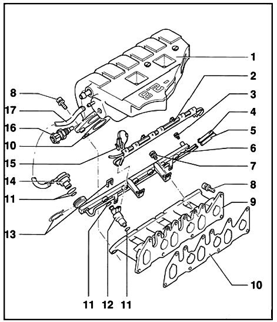

Intake Manifold: Service and Repair
NOTE: For additional information regarding the Removal and Installation procedure please refer to: Vehicle /Engine, Cooling, and Exhaust /Engine /Cylinder Head Assembly /Valve Cover / Service and Repair.
Service and Repair
Intake Manifold, Removing and Installing

1 - Intake Manifold, upper.
2 - Cable duct.
3 - Sealing plug.
- For fuel pressure test connection.
4 - Fuel line, supply.
- White marking.
5 - Fuel line, return.
- Blue marking.
6 - Fuel rail.
- For Removal and Installation........
7 - 10 Nm ( 7 ft lb ).
8 - 25 Nm ( 18 ft lb).
9 - Intake manifold, lower.
11 - O-ring.
- Replace if damaged.
12 - Injector ( N84 ).
- N30 - N33 for cylinder 1 - 4.
- N83 for cylinder 5.
- For removal and installing.....
- Checking...
13 - Retaining clip.
- Check that clip is securely seated.
14 - Fuel pressure regulator.
- Checking.....
15 - Connector.
- 2 pin.
- For Fuel Injectors -12- ( N30 - N33, N83, N84 ).
16 - Intake Air Temperature (IAT) sensor (G72).
- Tightening torque: 10 Nm ( 7 ft lb ).
- Checking.....
17 - Vacuum line.
- Replace if damaged.
- Check that line is securely seated.